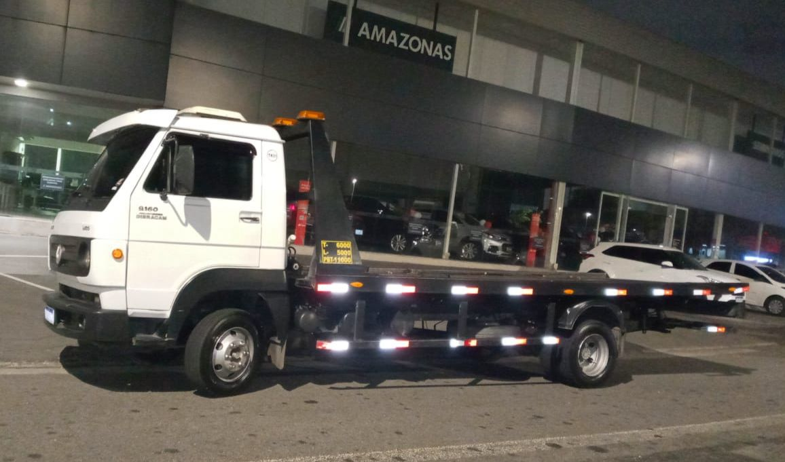
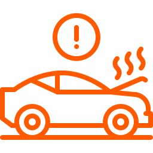

Estamos disponíveis 24 horas por dia, 7 dias por semana, para atender a suas necessidades de guincho.
Guincho para motos por toda São Paulo, litoral e interior
Guincho para veículos leves por toda São Paulo, Litoral e Interior
Entre em contato conosco para obter assistência imediata ou para mais informações sobre nossos serviços.
Fale Conosco